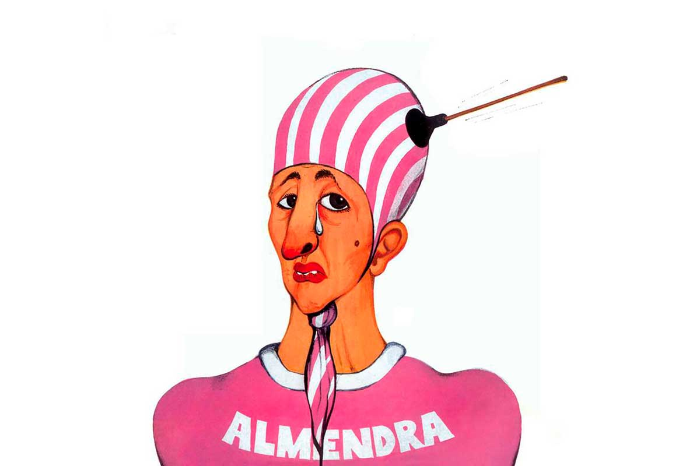
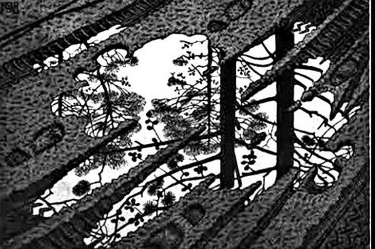
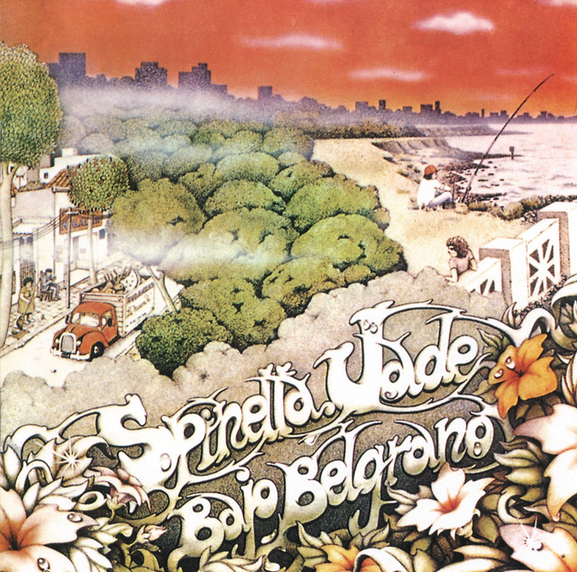
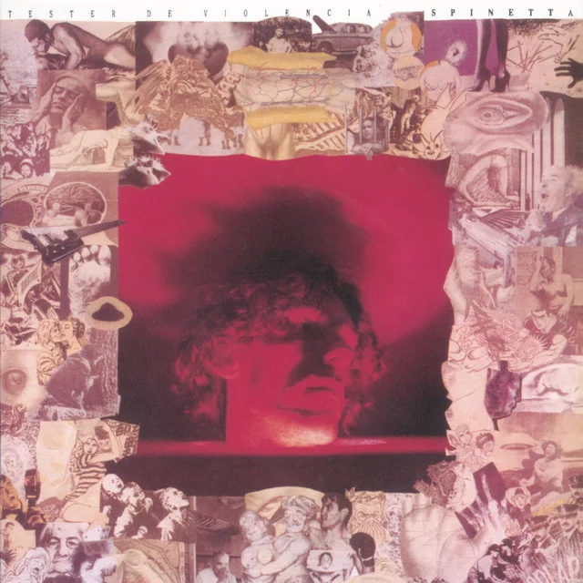
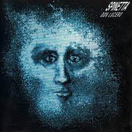
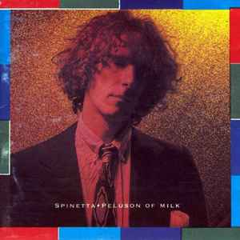
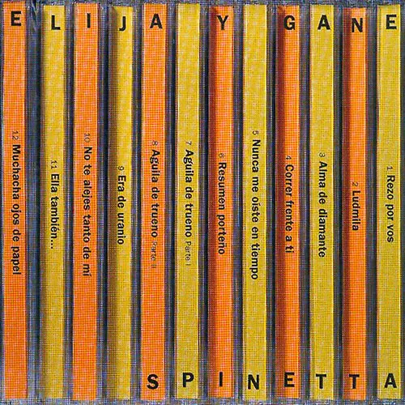
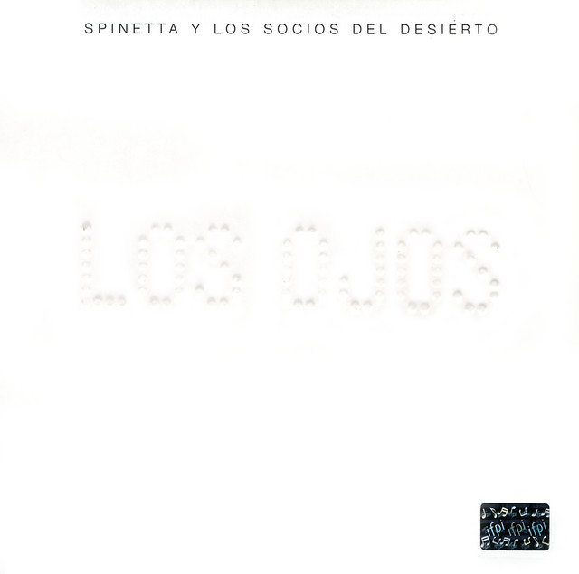
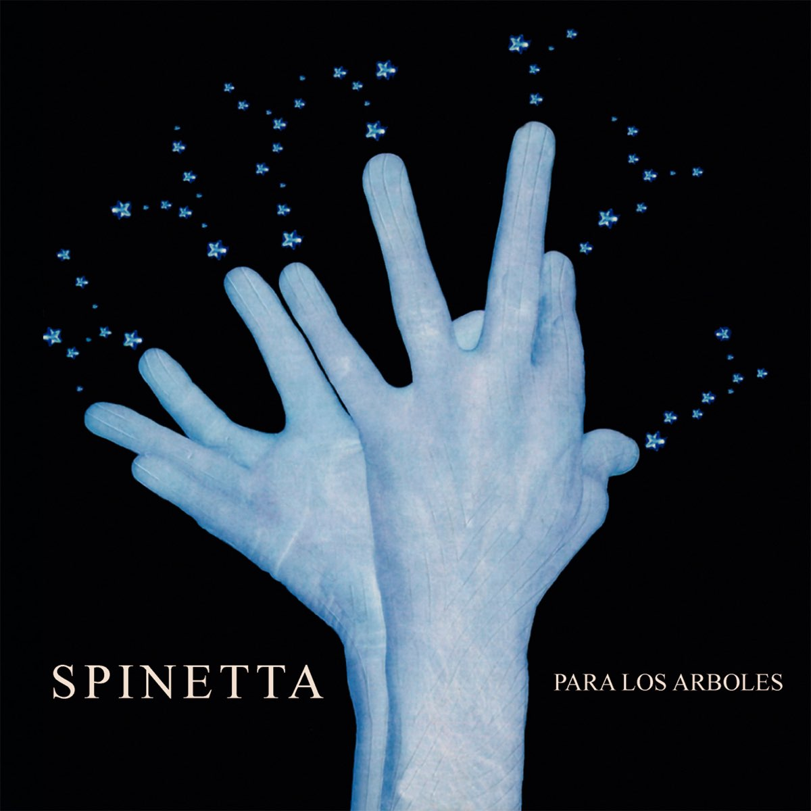
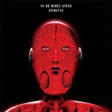

Biografía de Luis Alberto Spinetta
El viaje musical del Flaco Spinetta un simbolo de pasión, innovación y poesía"
Explorando la vida y el legado del ícono del rock argentino
Luis Alberto Spinetta, conocido como "El Flaco", fue mucho más que un músico argentino. Nacido el 23 de enero de 1950 en Buenos Aires, Spinetta dejó una huella imborrable en la historia de la música latinoamericana y se convirtió en uno de los referentes indiscutibles del rock en español.
Desde sus inicios en la década de 1960 como líder de la banda Almendra, Spinetta demostró un talento excepcional y una capacidad innata para la composición. Su voz única y versátil, combinada con su habilidad para escribir letras profundas y poéticas, capturó la atención de una generación sedienta de música auténtica y revolucionaria.
Almendra se convirtió rápidamente en una banda de culto y marcó un antes y un después en el panorama del rock argentino. Su estilo melódico, enérgico y lírico, influenciado por el rock británico y la música folk, catapultó a Spinetta y a sus compañeros de banda a la cima de la escena musical de la época.
Tras la disolución de Almendra, Spinetta formó la banda Invisible, un proyecto ambicioso y experimental que exploró nuevos sonidos y fusionó géneros musicales de manera audaz. Con álbumes emblemáticos como "Los libros de la buena memoria" y "Durazno sangrando", Invisible dejó su marca como una de las bandas más innovadoras de la música argentina.
Pero Spinetta no se detuvo ahí. Continuó evolucionando musicalmente y fundó otras bandas notables, como Pescado Rabioso y Spinetta Jade. Cada una de estas etapas representaba una evolución artística y una exploración de nuevos terrenos sonoros. Desde el rock progresivo hasta el jazz y el folklore argentino, Spinetta se mantuvo en constante búsqueda de la expresión musical más auténtica y personal.
La genialidad de Spinetta no solo se reflejaba en su música, sino también en sus letras. Sus composiciones eran profundas y poéticas, abordando temas existenciales, sociales y políticos con una sensibilidad única. Sus letras eran un caleidoscopio de metáforas y mensajes cifrados, que invitaban a la reflexión y despertaban la imaginación de sus oyentes.
A lo largo de su carrera, Spinetta lanzó numerosos álbumes aclamados, muchos de los cuales se han convertido en verdaderos clásicos de la música latinoamericana. Obras maestras como "Artaud", "Kamikaze", "Pelusón of Milk" y "La la la" dejaron una marca imborrable en la música popular y consolidaron a Spinetta como un artista visionario y vanguardista.
Su influencia en la música latinoamericana trascendió fronteras y generaciones. Artistas de diversas corrientes musicales han reconocido la profunda influencia de Spinetta en su trabajo y han rendido homenaje a su legado. Su visión artística y su pasión por la música inspiraron a toda una generación de músicos y seguidores, y su legado sigue siendo una fuente de inspiración para las nuevas generaciones.
Trágicamente, Luis Alberto Spinetta falleció el 8 de febrero de 2012, dejando un vacío inmenso en el mundo de la música. Sin embargo, su legado perdura como una llama eterna de creatividad y pasión. La música de Spinetta sigue resonando en los corazones de sus seguidores, y su influencia continúa expandiéndose.
Hoy en día, Spinetta es recordado como un artista visionario y un verdadero poeta del rock. Sus letras profundas y su música innovadora siguen siendo fuente de inspiración para músicos de todas las generaciones. Su legado artístico y su espíritu indomable continúan viviendo a través de sus canciones, que trascienden el tiempo y siguen conmoviendo a quienes las escuchan.
Luis Alberto Spinetta dejó una marca imborrable en la música latinoamericana y en el corazón de sus seguidores. Su genialidad musical y su inquebrantable búsqueda de la autenticidad le han otorgado un lugar privilegiado en la historia del rock en español. Aunque su partida dejó un vacío irremplazable, su legado perdurará como una fuente de inspiración y como un recordatorio de que la música puede ser una herramienta poderosa para expresar emociones, cuestionar el status quo y transmitir mensajes de amor y esperanza.
Luis Alberto Spinetta, el Flaco, seguirá siendo un faro de creatividad y pasión para las generaciones venideras, y su música continuará trascendiendo barreras y uniendo a las personas a través de las emociones que evoca. Su espíritu libre y su impacto duradero aseguran que su legado perdure como un testimonio eterno de su genialidad artística y su contribución a la música.

Logros
El legado imborrable de Spinetta
- Spinetta fue uno de los primeros artistas en explorar el rock progresivo y experimental en Argentina.
- Recibió numerosos premios y reconocimientos a lo largo de su carrera, incluyendo múltiples premios Gardel, el más prestigioso en la industria musical argentina.
- Sus álbumes "Artaud" (1973) y "Kamikaze" (1982) son considerados obras maestras del rock argentino.
- Spinetta fue incluido en el Salón de la Fama del Rock de Argentina en 2012, en reconocimiento a su contribución a la música del país.

Discografía
Delicadeza y experimentación: La discografía única de Luis Alberto Spinetta
- Almendra (1969)  YouTube Almendra Full Álbum (1969) spotify Álbum Almendra (1969)
- Pescado Rabioso: Artaud (1972)
- Invisible (1974)  YouTube Invisible Full Álbum (1974) spotify Álbum invisible (1974)
- A 18' del sol (1977)
- Spinetta Jade (1980)  YouTube Jade Full Álbum spotify Álbum spinetta Jade
- Los libros de la buena memoria (1983) YouTube los libros de la buena memoria (1983)
- Téster de violencia (1988)  YouTube Tester de Violencia Full Álbum (1988) spotify Álbum Tester de Violencia
- Don Lucero (1993)  YouTube Don Lucero Full Álbum (1993) spotify Álbum Don Lucero
- Pelusón of Milk (1991)  YouTube Pelusón of Milk Full Álbum (1991) spotify Álbum Pelusón of Milk
- Silver Sorgo (1993) YouTube Silver Sorgo Full Álbum (1993) spotify Álbum Silver Sorgo
- Elija y gane (1999)  YouTube Elija y gane Full Álbum (1999) spotify Álbum Elija y gane
- Los ojos (2001)  YouTube Los ojos Full Álbum (2001) spotify Álbum Los ojos
- Para los árboles (2003)  YouTube Para los árboles Full Álbum (2003) spotify Álbum Para los árboles
- Un mañana (2008)
- Pan (2010)
- Los amigo (2015)
- Ya no mires atrás (2019)  YouTube Ya no mires atrás Full Álbum (2019) spotify Álbum Ya no mires atrás
 YouTube Pescado Rabioso (1973)
spotify Álbum Pescado Rabioso (1973)
YouTube Pescado Rabioso (1973)
spotify Álbum Pescado Rabioso (1973)
") YouTube a'18 Full Álbum (1977)
spotify Álbum a'18 (1977)
YouTube a'18 Full Álbum (1977)
spotify Álbum a'18 (1977)
") YouTube Un mañana Full Álbum (2008)
spotify Álbum Un mañana
YouTube Un mañana Full Álbum (2008)
spotify Álbum Un mañana
") YouTube Pan Full Álbum (2010)
spotify Álbum Pan
YouTube Pan Full Álbum (2010)
spotify Álbum Pan
") youtube Los amigo Full Álbum
spotify Álbum Los amigo
youtube Los amigo Full Álbum
spotify Álbum Los amigo